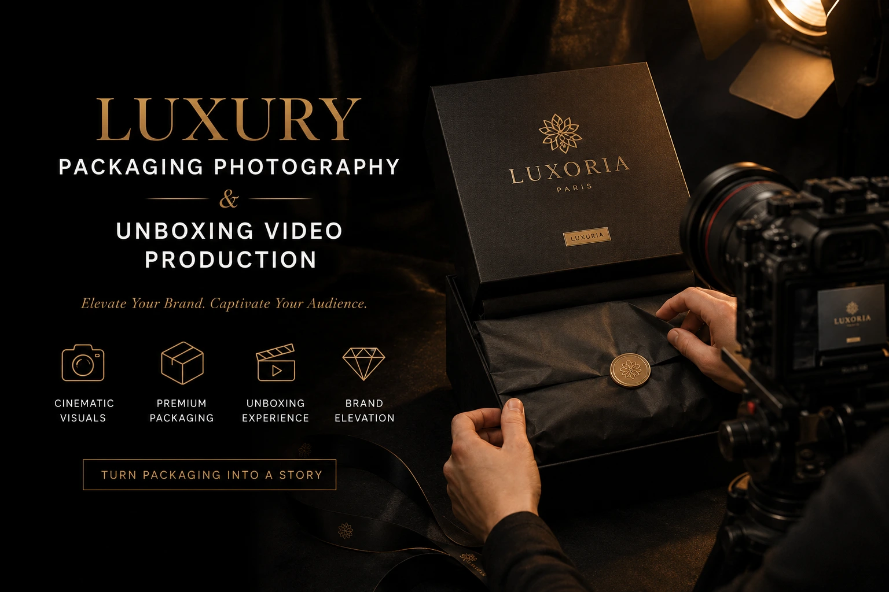
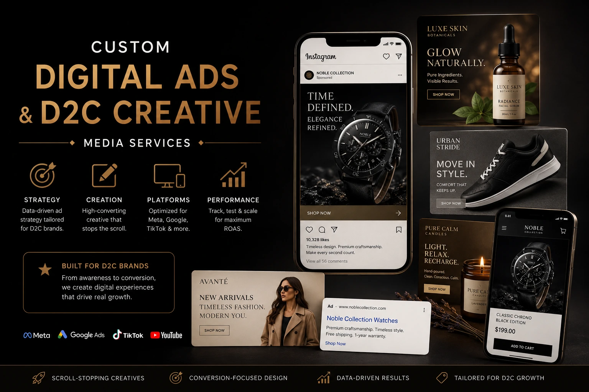

Using Cinematic Videos to Launch Premium Packaging for Local Brands
Why Packaging Is Now a Marketing Asset, Not a Logistics Decision
For Indian D2C brands that have invested in a premium packaging upgrade — a rigid box instead of a poly mailer, tissue paper and ribbon instead of newspaper fill, an embossed logo seal instead of a printed sticker — there is a commercial moment that is frequently missed: the launch. The packaging exists. The brand knows it is beautiful. But the customer does not know it yet. And a packaging upgrade that is not visually communicated to the market before and during launch generates a fraction of its potential commercial return.
Premium packaging communicates brand quality, justifies price premium, drives social sharing, and builds the emotional connection that produces repeat purchases. But it only does these things if the customer knows what to expect before they order — and only if the brand's visual production communicates the packaging experience with the same level of quality and craft that the packaging itself represents.
Brand promotion videography, unboxing video production, luxury product packaging photography, and consumer psychology visuals are the production investments that take a packaging upgrade from an operational cost to a marketing asset — and for local Indian brands building toward premium retail brand growth, this distinction is worth understanding in detail.
The Consumer Psychology of Premium Packaging Visuals
Consumer psychology visuals work through a specific mechanism: the brain makes quality judgments from visual inputs at a speed and depth that conscious evaluation cannot match. Before a buyer has read a single word of product description, their brain has already processed the visual signals of the packaging and generated an emotional response — premium or ordinary, worth the price or not, worth sharing or not.
The specific visual signals that the consumer brain maps to luxury and premium experience:
- Slowness and deliberateness. Slow-motion footage of a lid being lifted, a ribbon being untied, tissue paper being parted — these communicate that the brand has designed the experience to be savoured, not rushed. Speed communicates utility; slowness communicates ceremony. For a premium product, ceremony is the point.
- Texture and weight cues. Close-up footage or photography of the box surface — embossed logo, tactile coating, foil stamping — activates the brain's haptic memory and communicates quality through simulated touch. The weight implied by rigid box construction, visible through the deliberate way it is handled in video, signals substance and value.
- Layering and reveal structure. Premium packaging is designed in layers — outer box, inner tissue, insert card, product nest — and each layer in the unboxing sequence is a micro-reveal that builds anticipation and emotional engagement. Video that communicates this layer structure visually mirrors the actual consumer experience and allows the viewer to emotionally rehearse receiving the product.
- Precision and symmetry. Packaging that is precisely folded, symmetrically arranged, and photographed or filmed with compositional care signals that the brand is detail-oriented — which transfers to the buyer's expectation of the product itself. A poorly styled unboxing communicates carelessness that undermines the premium positioning of even the most expensive packaging.
- Colour and light quality. Soft, directional lighting on packaging materials — the way it reveals the depth of a matte finish, the sheen of tissue paper, the gloss of a foil logo — is a specific consumer psychology visuals choice that communicates sensory richness. Harsh, flat lighting on the same packaging communicates the opposite.

Unboxing Video Production: The Highest-Sharing Content Format for D2C
Unboxing video production has evolved from a YouTube subgenre to one of the most commercially effective content formats available to D2C brands. The reasons are grounded in consumer psychology: the unboxing video allows a potential buyer to emotionally rehearse receiving the product before purchasing — and that emotional rehearsal activates the same anticipation and desire that actual receipt would generate.
For Indian D2C brands launching or relaunching premium packaging, a professionally produced unboxing video serves multiple commercial functions simultaneously:
Pre-Purchase Conversion
An unboxing video embedded on the product page or used as an ad creative shows potential buyers exactly what they will receive — eliminating the visual uncertainty about the delivery experience that causes hesitation for first-time buyers of premium products.
Social Media Content
A cinematic unboxing video, cut into short-form content for Instagram Reels and YouTube Shorts, earns some of the highest organic sharing rates of any product content format — because it gives existing customers something to share that makes them look like they have great taste.
Paid Advertising Creative
Unboxing video content consistently outperforms standard product ad creative on click-through rate and cost-per-acquisition across Meta and Google advertising — because it communicates the full brand experience, not just the product, in a format the audience finds genuinely engaging.
Post-Purchase Reinforcement
For existing customers, the unboxing video shared after purchase validates their decision and builds the emotional connection that produces repeat purchasing and word-of-mouth referral — the two highest-value customer behaviours for D2C brands.
Luxury Product Packaging Photography: The Still Image Library
Alongside the video production, luxury product packaging photography produces the still image library that supports every non-video touchpoint in the brand's packaging launch: the website product page, the marketplace listing gallery, the press kit, the email campaign, the social media grid, and the paid advertising static creative.
Luxury product packaging photography for a D2C brand packaging launch requires a specific set of shots that, together, communicate the complete premium experience:
- The hero packaging shot. The complete package, sealed and presented — ribbon tied, seal applied, box pristine — shot on a surface that complements the packaging's colour and material palette. This is the image that communicates the first impression of receiving the package: the moment it arrives at the door.
- The layered reveal shot. The package opened to reveal the first layer of the unboxing experience — tissue paper arranged, insert card visible, the product nestled within. This communicates the layer structure and the care invested in the interior presentation.
- The detail and texture shots. Close-up images of the embossed logo, the foil stamping, the ribbon material, the tissue paper pattern, the insert card typography. These are the website and catalog visual production images that communicate craftsmanship at the detail level — the images that buyers zoom into on product pages and save on Instagram.
- The lifestyle context shot. The packaging in a curated lifestyle environment — on a marble surface with botanicals, on a styled desk, held by hands that communicate the demographic the brand is targeting. This is the aspirational image that communicates not just the packaging quality but the brand world it belongs to.
- The scale and proportion shot. The packaging photographed at a scale that communicates its actual dimensions accurately — a common source of buyer disappointment when packaging looks larger in photography than it is in person. A scale reference that accurately communicates size prevents the disappointment that drives negative reviews.
Brand Promotion Videography: The Launch Film
For Indian D2C brands launching a premium packaging range, a brand promotion videography launch film — distinct from the unboxing video — communicates the story behind the packaging: why the brand invested in the upgrade, what design decisions were made, what the packaging communicates about the brand's values and commitment to the customer experience.
This content format — a 60 to 90 second launch film combining behind-the-scenes production footage, founder voiceover, close-up detail footage of the packaging, and the unboxing reveal — is particularly effective for Indian D2C brands whose customer base is already following the brand and whose engagement is high enough to reward content that goes beyond product promotion into brand story.
The launch film serves different commercial functions from the unboxing video:
- Existing customer reactivation. Customers who have purchased before but not recently respond strongly to a packaging upgrade announcement that communicates that the brand has invested in improving their experience — triggering a reason to purchase again that pure product promotion cannot provide.
- Press and media relevance. A cinematic brand launch film is the format that lifestyle and business press are most likely to feature — providing the brand with earned media coverage that multiplies the launch's reach beyond the brand's own social media following.
- Investor and partnership credibility. For D2C brands seeking retail partnerships, investor funding, or distribution agreements, a professional launch film that communicates the brand's positioning, quality commitment, and market ambition is a due diligence asset — the kind of content that demonstrates the brand is operating at a level that justifies the commercial relationship being proposed.

Custom Digital Ads Production: Paid Launch Amplification
The organic reach of launch content — however well-produced — has a ceiling defined by the brand's existing following. Custom digital ads production for the packaging launch breaks through this ceiling by delivering the launch content to precisely targeted new audiences through paid distribution across Meta, Google, and YouTube.
The specific paid creative formats that perform best for premium packaging launches:
Meta Ads (Instagram and Facebook)
- 15 to 30 second unboxing short-form cut for Stories and Reels placement
- Slow-motion packaging reveal as a hook variant for testing against full unboxing
- Static packaging photography as a carousel ad showing the full reveal sequence
- Retargeting creative for website visitors who viewed but did not purchase
YouTube Ads
- Non-skippable 15 second awareness ad built around the packaging reveal moment
- Full 60 to 90 second launch film as a skippable in-stream ad for engaged viewers
- YouTube Shorts ad cut from the unboxing video for short-form placement
- Discovery ad using the launch film thumbnail for high-intent search audiences
Google Shopping and Display
- Product listing images updated to feature premium packaging in the hero shot
- Google Display retargeting using the lifestyle packaging photography
- Performance Max campaign assets including all video and image variants
- Merchant Centre product video featuring the unboxing sequence
Website and Catalog Visual Production: Updating Every Touchpoint
A premium packaging launch is incomplete if the visual upgrade does not extend to every touchpoint where a buyer encounters the brand before purchase. Website and catalog visual production updates that should accompany every premium packaging launch:
- Product page gallery update. The packaging reveal sequence — hero shot, layered reveal, detail close-ups — should be added to the product gallery immediately after the hero product image, communicating the full delivery experience before the buyer adds to cart.
- Website homepage and collection page banners. The lifestyle packaging photography — styled, art-directed, and communicating the brand's premium positioning — should replace or supplement existing banner imagery across the website's highest-traffic pages for the duration of the launch period.
- Email campaign visual assets. The launch email sequence — announcement, reminder, and post-purchase follow-up — should feature the packaging photography and unboxing video content at the centre of its visual hierarchy, rather than relying on text-heavy templates.
- Marketplace listing updates. For brands selling on Amazon, Flipkart, or Myntra alongside their own website, the premium packaging photography should be added to the secondary image slots of every relevant listing — communicating the premium delivery experience to marketplace buyers who may not visit the brand's own website.
Creative Media Services for D2C: The Complete Launch Asset List
The most efficient approach to a premium packaging launch is a single, coordinated production session that generates every required visual asset simultaneously — sharing lighting, location, styling, and crew across all formats. Here is the complete asset list that creative media services for D2C should deliver for a premium packaging launch:
- One cinematic brand launch film (60 to 90 seconds)
- One professional unboxing video (2 to 3 minutes, full format)
- Three to five short-form social media cuts from the above (15 to 30 seconds each)
- Hero packaging photography (five to eight still images covering all shots listed above)
- Detail and texture close-up photography (three to five images)
- Lifestyle context photography (two to three images)
- Custom digital ad variants across Meta, YouTube, and Google formats
- Email campaign header images (two to three formatted versions)
- Website banner images in all required dimensions
- Marketplace listing images formatted and sized per platform specifications
Every asset in this list can be produced in a single well-planned production day when the packaging, the location, the lighting, and the creative direction are prepared in advance. The brands that approach this as ten separate productions pay five to eight times more and receive ten inconsistently styled asset sets. The brands that approach it as one coordinated production receive a visually coherent, commercially complete launch asset library at a fraction of the cost.
Premium Retail Brand Growth: The Long-Term Return on Packaging Visuals
Premium retail brand growth through packaging investment and packaging visual production compounds over time in ways that are not immediately visible at launch but become commercially significant within six to twelve months. The mechanisms:
- UGC generation and social proof accumulation. A premium unboxing experience — communicated through professional visuals before purchase, delivered in reality — generates organic social sharing by customers who want to document and share their experience. This UGC becomes a compounding social proof asset that reduces paid advertising cost-per-acquisition over time, as new buyers arrive pre-sold by existing customers' shared experiences.
- Price elasticity improvement. A brand that has consistently communicated premium packaging quality through professional visual production earns a higher price tolerance from its audience — buyers who expect and have seen evidence of a premium experience are less price-sensitive than buyers for whom the packaging is unknown or undifferentiated.
- Repeat purchase rate improvement. The post-purchase emotional experience of receiving and opening premium packaging — particularly when the buyer's expectation was set by high-quality pre-purchase visual content — produces measurably higher satisfaction scores and repeat purchase rates than equivalent products delivered in standard packaging.
Conclusion
A premium packaging investment without professional visual production is a brand investment that reaches only the customers who are already buying. Brand promotion videography, unboxing video production, luxury product packaging photography, consumer psychology visuals, and custom digital ads production are the creative media services for D2C that take a packaging upgrade from an operational cost to a full-scale marketing launch — communicating the premium experience to new and existing audiences simultaneously, at a scale that the packaging alone cannot achieve.
For local Indian brands pursuing premium retail brand growth, the combination of premium packaging and premium visual production is not a large-brand luxury. It is the specific combination of investments that closes the credibility gap between a local brand and the national premium players it is competing against — and it is available to any brand willing to plan a single, well-coordinated production day with a team that understands both the craft and the commercial objectives.
At The PhD Ads, we specialise in brand promotion videography, unboxing video production, luxury product packaging photography, and complete creative media services for D2C brands launching premium packaging — from the cinematic launch film and full unboxing video to custom digital ads and website and catalog visual production, all delivered as a single coordinated asset library built for launch day and beyond.
Key Topics
Ready to Launch Your Premium Packaging with Cinematic Visual Production?
At The PhD Ads, we produce complete visual launch packages for D2C brands upgrading to premium packaging — cinematic brand films, unboxing videos, luxury packaging photography, and custom digital ads, all delivered as a single coordinated asset library from one production day.
Email: team@e2o.in